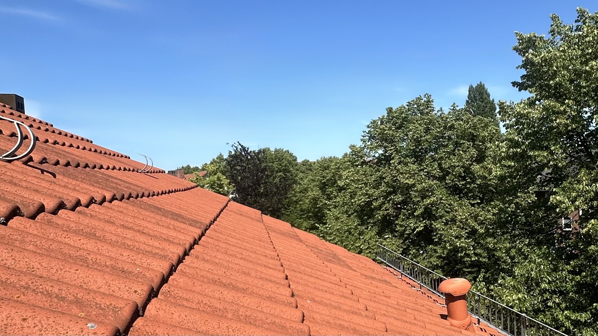
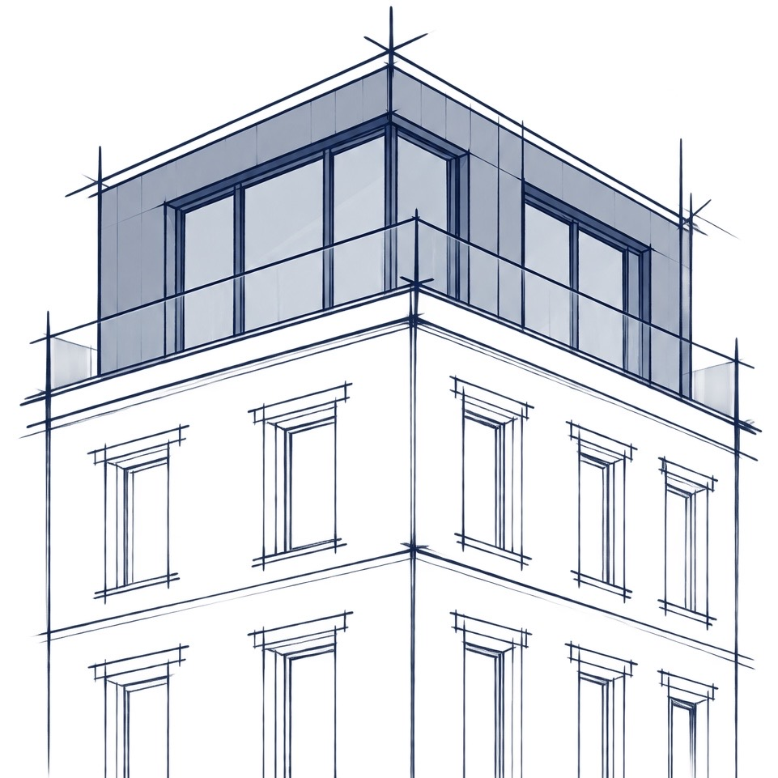

Machbarkeitsstudie

Potenzial identifizieren


Elbhaus prüft Grundstücke und Bestandsimmobilien in Hamburg auf zusätzliche Bebauungsmöglichkeiten. Von der Potenzialanalyse bis zur Realisierung.
Für Grundstückseigentümer, Bestandshalter und Investoren.
Nachverdichtung oder Aufstockung können neue Wohnfläche schaffen und den wirtschaftlichen Wert einer Immobilie positiv verändern.
Elbhaus untersucht diese Potenziale. Unsere Machbarkeitsstudie prüft mögliche Flächen, Planungsrecht, bauliche Voraussetzungen, Kosten und Wirtschaftlichkeit und liefert eine fundierte Empfehlung für die nächsten Schritte.
Gerade vor einem Verkauf kann es sinnvoll sein, zusätzliche Bebauungsmöglichkeiten zu klären und Baurecht zu schaffen oder abzusichern. Ein belastbar dargestelltes Entwicklungspotenzial kann den Grundstückswert, den erzielbaren Kaufpreis und damit Ihren Verkaufsertrag erhöhen.
Der Potenzialfinder wird geladen. Alternativ können Sie Ihr Objekt direkt per E-Mail anfragen.

Bestand und Entwicklungsmöglichkeiten einordnen.
Baurecht, Varianten und Wirtschaftlichkeit bewerten.
Die gewählte Variante zur Genehmigung führen.
Die Umsetzung koordinieren und begleiten.
Potenzial identifizieren
Grundstücksflächen entwickeln

Bestandsflächen erweitern

Gesichertes Baurecht kann den Immobilienwert steigern und höhere Verkaufserlöse ermöglichen. Es macht zusätzliche Bebauungsmöglichkeiten in der Vermarktung konkret und nachvollziehbar.
Wer Baurecht vor dem Verkauf sichert, kann zusätzliche Bebauungsmöglichkeiten als Mehrwert anbieten und einen höheren Verkaufspreis begründen.
Pläne und behördliche Bescheide zeigen Kaufinteressenten konkret, welche Bebauung möglich ist. So wird der zusätzliche Wert Ihrer Immobilie sichtbar.
Geklärtes Baurecht reduziert Unsicherheit für Käufer und bietet weniger Anlass für risikobedingte Preisabschläge.
Jede Immobilie ist anders. Unsere Haltung bleibt: vertrauensvoll zusammenarbeiten, Möglichkeiten erkennen und Entwicklung auf eine fundierte Grundlage stellen.
Eine gute Entwicklung beginnt mit Vertrauen und einem offenen Austausch.
Wir sehen Grundstück und Bestandsgebäude als Ausgangspunkt für neue Möglichkeiten. Mit planerischer Neugier untersuchen wir, wo zusätzliche Wohnfläche entstehen kann.
Wir führen planerische und wirtschaftliche Fragen zu einer verständlichen Einschätzung zusammen.
Wir entwickeln mit Blick auf den Bestand, die Nachbarschaft und Ihre langfristigen Ziele. Dabei verbinden wir bauliche Qualität mit wirtschaftlicher Tragfähigkeit.

Gründer von Elbhaus / Geschäftsführer
Stadtplaner (M.Sc.)
Öffentliche Verwaltung (M.A.)
Berufliche Stationen umfassen Tätigkeiten im Stadtplanungsbüro, die Hochbauprojektleitung sowie Leitungsfunktionen in der öffentlichen Verwaltung. Seit 2025 arbeitet er an einer Promotion in den Wirtschaftswissenschaften.
Im ersten Austausch besprechen wir die Objektadresse, Ihre Ziele und die vorhandene Bebauung. Anschließend legen wir fest, welche Fragen vertieft geprüft werden sollen und welcher Leistungsumfang sinnvoll ist.
Für die erste Kontaktaufnahme genügt die Objektadresse mit einer kurzen Beschreibung. Lageplan, Grundrisse, Flächenangaben oder frühere Genehmigungen helfen bei der weiteren Prüfung, sind für den Erstkontakt aber keine Voraussetzung.
Sie betrachtet insbesondere Planungsrecht, erreichbare Flächen, bauliche Voraussetzungen, Kostenrahmen und Wirtschaftlichkeit. Daraus entsteht eine nachvollziehbare Grundlage für die nächsten Entscheidungen.
Für eine Machbarkeitsstudie beträgt die Bearbeitungszeit in der Regel 10 bis 15 Werktage, sobald Aufgabenstellung und erforderliche Unterlagen vorliegen.
Nein. Eine Entwicklung kann zusätzliche Wohnfläche, langfristige Erträge oder eine bessere Nutzung des eigenen Grundstücks zum Ziel haben. Vor einem möglichen Verkauf kann die vorherige Klärung von Baurecht ebenfalls sinnvoll sein.
Ja. Auf Grundlage der Potenzialprüfung kann Elbhaus die weitere Projektentwicklung begleiten – von der Konkretisierung über Planung und Genehmigung bis zur Vorbereitung und Begleitung der Realisierung.